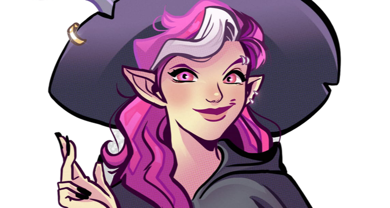
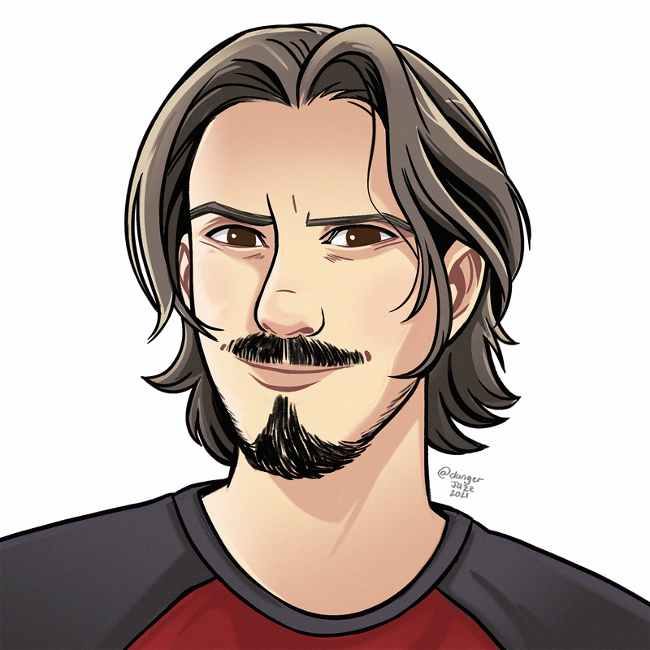

About me
Online I go by the handle CrashGem. I've been playing and Game Mastering D&D and other Tabletop games for over 28 years.
I love Dungeons & Dragons.
I'm currently running 3 ongoing 5e D&D campaigns that meet on a weekly basis, a monthly game, and a West marches game. And the occasional one-shots thrown in to spice things up.
I'm currently a player in 1 weekly game:
❄️ Rime of the Frostmaiden as Hellebore
I stream games and game prep everyday over on Twitch
I also enjoy running 25-hour super games as fundraisers for the Extra Life charity. In the past 5 years, I have raised over $17,000 for Children's Hospital Networks.
My goal as a game master is to ensure each and every player “at the table” is having fun. Together we will build stories you will be retelling for the rest of your life.
Expanded:
I was a play-tester for 5e and have been playing it since release. I am very well versed in the rules. I’ve been using Roll20 for over 6 years, with over 8000+ hours logged, dynamic lighting access, API scripts, and the skill to use them. As a graphic artist, I create custom miniatures, maps, and materials for the games I run.
As a professional development expert, I am comfortable teaching others new skills (Like D&D and how to use Roll20, for example). I'm happy to teach you how to setup and run games on Roll20 virtual tabletop over on my YouTube Channel. I also spent several years demoing tabletop and wargames at conventions for various companies. I am very comfortable at the gaming table.
My goal as a game master is to ensure each and every player “at the table” is having fun. Together we will build stories you will be retelling for the rest of your life.0
Connections
Nord Games •
The Forge VTT •
Twitch •
ExtraLife Page 2021 •
Pinterest •
Reddit •
YouTube •
Twitter •
My Wishlist!
Chamomile Art by Jazz Miranda
Premium Dungeon Mastering
I started running paid games in April of 2018 after experiencing a few paid games as a player. I was impressed with the commitment and investment of my fellow players and the DM. I wanted to run some campaigns that had that same level of commitment from everyone involved. I've found the literal investment in the group translates directly into how invested everyone is in the campaign's success.
Players in my games gain full access to Legendary Tier DNDBeyond access, which is in turn linked to our Foundry FVTT servers. That means legal, searchable copies of all published books and adventures and robust character-building tools.
Players also gain access to a very active Discord community with character builds, D&D memes, rules discussions, and DM "masterclass" sessions, as well as opportunities to join other games and campaigns run by DMs on my server including our West Marches game, Paradise Vale.
Additionally, dues collected from group members are used to purchase DMGuild add-on supplements for published campaigns, a boosted Discord server, 24/7 Foundry VTT servers, and ensure only the best maps and miniatures.
When I commit to running a campaign, I follow through to the campaign's finale. Nothing is worse than investing your time and energy into a campaign that never reaches its conclusion.
The following campaigns have been run from start to finish, many taking over a year of weekly sessions!
Red Hand of Doom, Scales of War, Lost Mine of Phandelver, Storm King's Thunder, HeroQuest, and two instances of Ghosts of Saltmarsh.
Currently, I am running the following games:
Odyssey of the Dragonlords - Monday Nights - FULL
Skull & Shackles - Thursday Nights - FULL
Mythic Odysseys - Sunday Nights - FULL
Paradise Vale West Marches - Flexible, Spots Available
